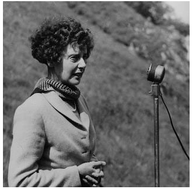
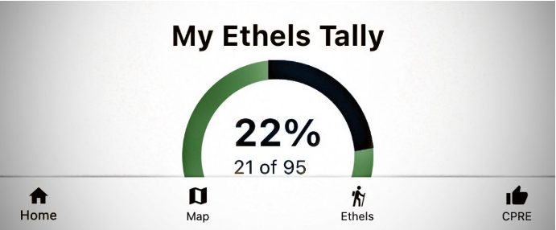
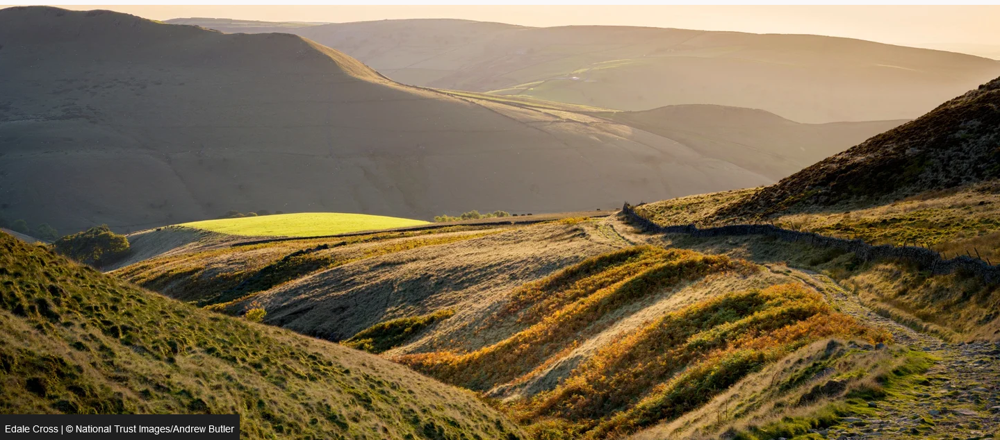

Cohortology
Full Cohort List
Walk Details
Ethels
Biography of Ethel Haythornthwaite
Ethel Haythornthwaite (1894–1986) was an environmental campaigner and pioneer of the countryside movement. In 1924, she founded the group that would become the Friends of the Peak District (FoPD), aimed at protecting the Peak District countryside from development. The death of her first husband in World War 1 (1917) was the catalyst for Ethel wanting to protect the countryside and make England a good place for the heroes and heroines of both world wars to return to. In 1928, she fronted the appeal to save Longshaw Estate (now looked after by the National Trust) from development, and later helped acquire land around Sheffield that became its green belt, in 1938. She spent most of 1942 in London, "leading the national organisation in the crucial early debates on how the post-war reconstruction of the country should be achieved by democratic planning". In 1945, she was appointed to the UK government's National Parks Committee, and helped to make the successful case for the National Parks and Access to the Countryside Act of 1949, which led to the founding of the Peak District National Park in 1951. She also helped make green belt land part of national government policy in 1955. Source: www.peakdistrict.gov.uk
Hill and Mountain Designations
In the UK, hills and mountains are named with various designations relating to their height and prominence over surrounding terrain with the designations often being named after their originator. These include the Munros, Nesbitts, Hewitts, Wainwrights and the more humourously named Marilyns (english munros). Whilst Ethel Haythornthwaite was not responsible for originating the designation now named in her honour, it was thought to be a fitting tribute to someone who had given so much to the cause of founding the Peak District and other countryside causes. The Ethels are all the Peak District hilltops over 400m above sea level and some significant lower prominent hills that stand out in their own right. There are 95 in total. They were suggested in 2021 by Doug Colton of the Sheffield branch of the Campaign for the Protection of Rural England (CPRE) now a national charity whch was founded by Ethel Haythornthwaite then Ethel Gallimore in 1924. The CPRE have now developed a smartphone app to help people tick them off as they tackle them.
List of Ethels
About the Peak District
Location and History
The area we now know as the Peak District was first designated as a National Park in 1951 occupying appoximately 555 sq miles of land to the North of Derby, to the East and South of Manchester and the West of Sheffield. This makes it a similar size to Greater London. Millions of years ago the Peak District was a tropical lagoon. The fossils of tiny sea creatures can be seen today, even at the highest peaks of the National Park. The Peak District was first farmed for sheep, cattle and crops 6,000 years ago. You can still see traces of fields and terraces cultivated in Roman times. By the end of the 20th century there were around half-a-million sheep, cattle and pigs in the Peak District. The name ‘Peak’ does not in fact relate to the region’s uplands, but is thought to derive from the Pecsaetan, an Anglo-Saxon tribe which settled in the area. The lead for white paint in Vermeer’s painting of Girl with a Pearl Earring came from the Peak District. Peveril Castle in Castleton is one of England’s earliest Norman fortresses. The stone keep was built by Henry II in 1176 and is now managed by English Heritage. Thousands of years of human influence can be seen throughout the National Park – in walls and field patterns, buildings, lanes, villages and former railways as well as prehistoric features such as burial mounds and stone circles. London’s landmark Nelson’s Column wasn’t the first memorial to the Battle of Trafalgar. In 1810 Peak District residents erected an impressive obelisk on Birchen Edge near Baslow. Three massive rocks close by - said to resemble ships’ prows - are inscribed with the names Victory, Defiant and Soverin. Sir Richard Arkwright – one of the most important figures in the Industrial Revolution – built an unusual home in the style of a castle at Cressbrook. From here you can walk along the side of the river to the wonderfully named Water-cum-Jolly Dale.
Kinder Trespass
On 24th April, 1932, hundreds of men and women defied the law to walk over hills and moorland to the plateau of Kinder Scout, Derbyshire, in what would become the Peak District National Park. The protest was led by 20-year-old Benny Rothman, Lancashire secretary of the British Workers’ Sports Federation (BWSF), which organised walks and cycling trips for young workers from Manchester and surrounding mill towns. It followed a confrontation with gamekeepers, three weeks earlier, during a BWSF Easter camp when ramblers attempting to reach another peak, Bleaklow, were turned back. The plan for the Mass Trespass was for ramblers from Manchester to meet up with groups from other places - including Sheffield - at the Kinder plateau. Estimates vary of the numbers taking part - at the time the Manchester Guardian estimated 400 people had been involved in the Mass Trespass. The BWSF had called for a rally in the village of Hayfield on 24th April - but this was a diversion, drawing in one third of the Derbyshire police force, which expected Communist unrest. Meanwhile, trespassers met at Bowden Bridge quarry, with Rothman addressing hundreds of ramblers before they set off. At William Clough, trespassers were confronted by gamekeepers and scuffles broke out. A gamekeeper was injured. The trespassers broke through, running through prohibited land to Kinder plateau and meeting up with ramblers from Sheffield from the 'other side'. Trespassers agreed to walk back to Hayfield ‘with heads held high’ – but police were still there, waiting to make arrests. The arrest of six young men – and subsequent imprisonment of five – unleashed a wave of sympathy for the ramblers and fuelled the ‘right to roam’-movement from which we still enjoy the benefits today.
